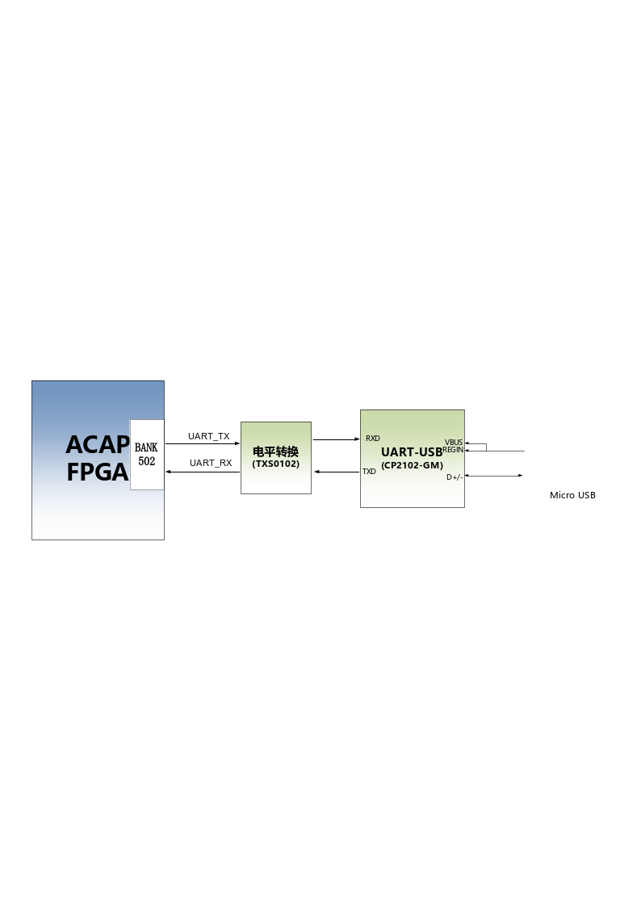
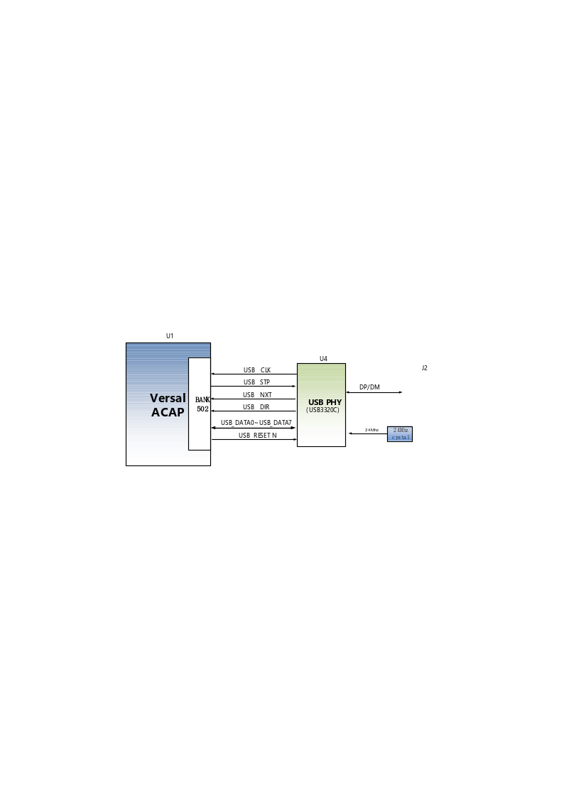
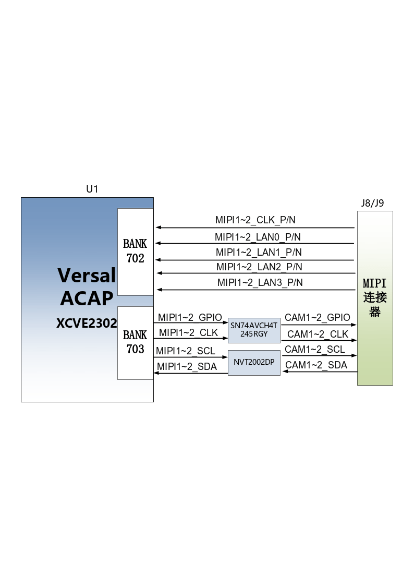
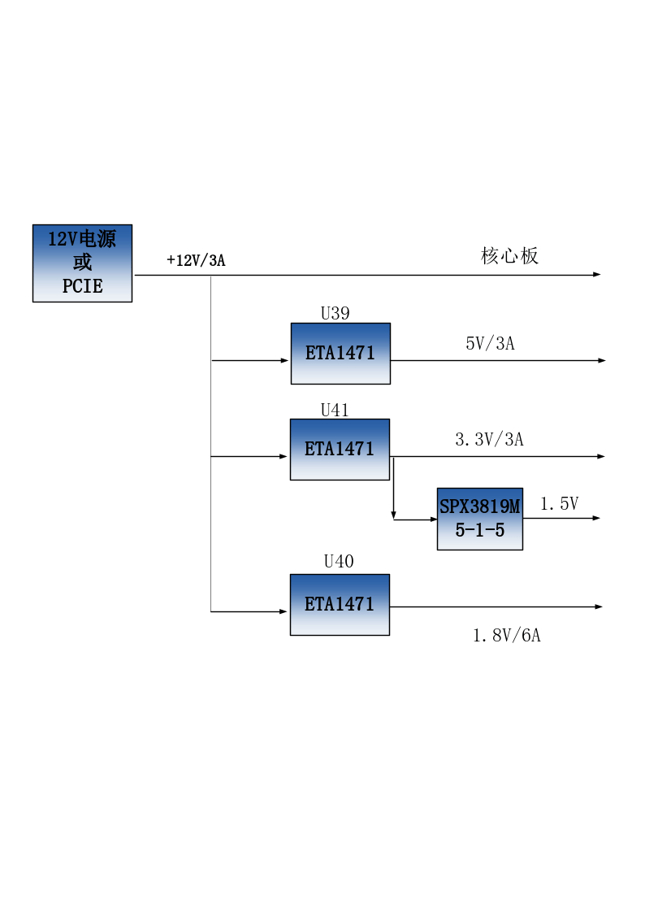

扩展板#
简介#
通过前面的功能简介，我们可以了解到扩展板部分的功能
2路千兆以太网RJ-45接口
PCIe3.0 x4接口
2路SFP+高速光纤接口
1路USB Uart调试接口
1路USB HOST接口
1路LVDS显示屏接口
2路MIPI摄像头接口
1路Micro SD卡座
JTAG调试口
1路温度传感器
1路EEPROM
1路CANFD通信接口
1路22针拓展口
千兆以太网接口#
VD100拓展板上有两路千兆以太网接口，1路连接到PS端，另1路连接到PL端。通过景略半导体的工业级以太网GPHY芯片（JL2121-N040I）为用户提供网络通信服务。JL2121芯片支持10/100/1000 Mbps网络传输速率，通过RGMII接口跟FPGA的MAC层进行数据通信。JL2121D支持ＭDI/MDX自适应，各种速度自适应，Master/Slave自适应，支持MDIO总线进行PHY的寄存器管理。
JL2121上电会检测一些特定的IO的电平状态，从而确定自己的工作模式。表3-2-1 描述了GPHY芯片上电之后的默认设定信息。
配置Pin脚 |
说明 |
配置值 |
RXD3_ADR0 RXC_ADR1 RXCTL_ADR2 |
MDIO/MDC 模式的PHY地址 |
PHY Address 为 001 |
RXD1_TXDLY |
TX时钟2ns延时 |
延时 |
RXD0_RXDLY |
RX时钟2ns延时 |
延时 |
表3-2-1 PHY芯片默认配置值
当网络连接到千兆以太网时，FPGA和PHY芯片JL2121的数据传输时通过RGMII总线通信，传输时钟为125Mhz，数据在时钟的上升沿和下降样采样。
当网络连接到百兆以太网时，FPGA和PHY芯片JL2121的数据传输时通过RMII总线通信，传输时钟为25Mhz。数据在时钟的上升沿和下降样采样。
千兆以太网的设计示意图如图3-2-1所示:

图3-2-1千兆以太网接口设计示意图
千兆以太网引脚分配如下：
信号名称 |
引脚名 |
引脚 号 |
备注 |
PHY1_TXCK |
LPD_MIO0 |
T1 |
以太网1RGMII 发送时钟 |
PHY1_TXD0 |
LPD_MIO1 |
U1 |
以太网1发送数据bit０ |
PHY1_TXD1 |
LPD_MIO2 |
W1 |
以太网1发送数据bit1 |
PHY1_TXD2 |
LPD_MIO3 |
Y1 |
以太网1发送数据bit2 |
PHY1_TXD3 |
LPD_MIO4 |
Y2 |
以太网1发送数据bit3 |
PHY1_TXCTL |
LPD_MIO5 |
W2 |
以太网1发送使能信号 |
PHY1_RXCK |
LPD_MIO6 |
V2 |
以太网1RGMII接收时钟 |
PHY1_RXD0 |
LPD_MIO7 |
U2 |
以太网1接收数据Bit0 |
PHY1_RXD1 |
LPD_MIO8 |
T3 |
以太网1接收数据Bit1 |
PHY1_RXD2 |
LPD_MIO9 |
U3 |
以太网1接收数据Bit2 |
PHY1_RXD3 |
LPD_MIO10 |
V3 |
以太网1接收数据Bit3 |
PHY1_RXCTL |
LPD_MIO11 |
Y3 |
以 太网1接收数据有效信号 |
PHY1_MDIO |
PS_MIO51 |
AA10 |
以太网1MDIO管理数据 |
PHY1_MDC |
PS_MIO50 |
AB10 |
以太网1MDIO管理时钟 |
PHY1_RESET |
LPD_MIO15 |
T5 |
以太网1复位信号 |
PHY2_TXCK |
B302_L9_N |
A13 |
以太网2 RGMII 发送时钟 |
PHY2_TXD0 |
B302_L8_N |
A11 |
以太网2发送数据bit０ |
PHY2_TXD1 |
B302_L8_P |
B11 |
以太网2发送数据bit1 |
PHY2_TXD2 |
B302_L7_N |
A10 |
以太网2发送数据bit2 |
PHY2_TXD3 |
B302_L7_P |
B10 |
以太网2发送数据bit3 |
PHY2_TXCTL |
B302_L9_P |
B12 |
以太网2发送使能信号 |
PHY2_RXCK |
B302_L6_P |
D10 |
以太网2 RGMII接收时钟 |
PHY2_RXD0 |
B302_L5_N |
C12 |
以太网2接收数据Bit0 |
PHY2_RXD1 |
B302_L5_P |
D11 |
以太网2接收数据Bit1 |
PHY2_RXD2 |
B302_L10_N |
A14 |
以太网2接收数据Bit2 |
PHY2_RXD3 |
B302_L10_P |
B13 |
以太网2接收数据Bit3 |
PHY2_RXCTL |
B302_L6_N |
C10 |
以 太网2接收数据有效信号 |
PHY2_MDIO |
B302_L1_P |
C14 |
以太网2 MDIO管理数据 |
PHY2_MDC |
B302_L1_N |
C13 |
以太网2 MDIO管理时钟 |
PHY2_RESET |
B703_L12_P |
H23 |
以太网2复位信号 |
PCIe3.0 X4接口#
VD100扩展板上提供一个工业级高速数据传输PCIe3.0 x4接口，PCIE卡的外形尺寸符合标准PCIe卡电气规范要求，可直接在普通PC的x4 PCIe插槽上使用。
PCIe接口的收发信号直接跟FPGA的GTY收发器相连接，四通道的TX信号和RX信号都是以差分信号方式连接到FPGA，单通道通信速率可高达8G bit带宽。PCIe的参考时钟由PC的PCIe插槽提供给开发板，参考时钟频率为100Mhz。
开发板的PCIe接口的设计示意图如下图3-3-1所示,其中TX发送信号和参考时钟CLK信号用AC耦合模式连接。

图3-3-1 PCIe x4设计示意图
PCIe x4接口FPGA引脚分配如下：
网络名称 |
FPGA引脚 |
备注 |
PCIE_RX0_P |
P2 |
PCIE通道0数据接收 Positive |
PCIE_RX0_N |
P1 |
PCIE通道0数据接收Negative |
PCIE_RX1_P |
M2 |
PCIE通道1数据接收 Positive |
PCIE_RX1_N |
M1 |
PCIE通道1数据接收Negative |
PCIE_RX2_P |
K2 |
PCIE通道2数据接收 Positive |
PCIE_RX2_N |
K1 |
PCIE通道2数据接收Negative |
PCIE_RX3_P |
H2 |
PCIE通道3数据接收 Positive |
PCIE_RX3_N |
H1 |
PCIE通道3数据接收Negative |
PCIE_TX0_P |
N5 |
PCIE通道0数据发送 Positive |
PCIE_TX0_N |
N4 |
PCIE通道0数据发送Negative |
PCIE_TX1_P |
L5 |
PCIE通道1数据发送 Positive |
PCIE_TX1_N |
L4 |
PCIE通道1数据发送Negative |
PCIE_TX2_P |
J5 |
PCIE通道2数据发送 Positive |
PCIE_TX2_N |
J4 |
PCIE通道2数据发送Negative |
PCIE_TX3_P |
G5 |
PCIE通道3数据发送 Positive |
PCIE_TX3_N |
G4 |
PCIE通道3数据发送Negative |
PCIE_CLK_P |
M7 |
PCIE的参考时钟 Positive |
PCIE_CLK_N |
M6 |
PCIE的参考时钟Negative |
PCIE_PERST |
B13 |
PCIE复位信号 |
光纤接口#
VD100开发板上有2路SFP+光纤接口，用户可以购买SFP光模块(市场上1.25G，2.5G，10G光模块）插入到这2个光纤接口中进行光纤数据通信。2路光纤接口分别跟FPGA的BANK104的GTY收发器的2路RX/TX相连接，TX信号和RX信号都是以差分信号方式通过隔直电容连接FPGA和光模块，每路TX发送和RX接收数据速率高达10Gb/s。BANK104的GTY收发器的参考时钟由是156.25Mhz差分晶振提供。
FPGA和SFP光纤设计示意图如下图3-4-1所示:

图3-4-1光纤设计示意图
第1路光纤接口FPGA引脚分配如下：
网络名称 |
FPGA引脚 |
备注 |
SFP1_TX_P |
E5 |
SFP光模块数据发送 Positive |
SFP1_TX_N |
E4 |
SFP光模块数据发送Negative |
SFP1_RX_P |
F2 |
SFP光模块数据接收 Positive |
SFP1_RX_N |
F1 |
SFP光模块数据接收Negative |
SFP1_TX_DIS |
D26 |
SFP光模块光发射禁止，低有效 |
SFP1_SCL |
D21 |
I2C时钟信号 |
SFP1_SDA |
D20 |
I2C数据信号 |
第2路光纤接口FPGA引脚分配如下：
网络名称 |
FPGA引脚 |
备注 |
SFP2_TX_P |
D8 |
SFP光模块数据发送 Positive |
SFP2_TX_N |
D7 |
SFP光模块数据发送Negative |
SFP2_RX_P |
D2 |
SFP光模块数据接收 Positive |
SFP2_RX_N |
D1 |
SFP光模块数据接收Negative |
SFP2_TX_DIS |
D25 |
SFP光模块光发射禁止，低有效 |
SFP_CLK_N |
H6 |
FPGA输入时钟Negative |
SFP_CLK_P |
H7 |
FPGA输入时钟Positive |
USB转串口#
VD100扩展板上配备了1个连接到PS端的Uart转USB接口。转换芯片采用了Silicon Labs CP2102GM的USB-UAR芯片, USB接口采用MINI USB接口，可以用一根USB线将它连接到上PC的USB口进行串口数据通信 。
USB Uart电路设计的示意图如图3-5-1所示
图3-5-1 USB转串口示意图
UART转串口的FPGA引脚分配：
信号名称 |
FPGA引脚名 |
F PGA引脚号 |
备注 |
PS_UART0_RX |
LPD_MIO16 |
U5 |
Uart数据输入 |
PS_UART0_TX |
LPD_MIO17 |
V5 |
Uart数据输出 |
USB2.0接口#
VD100扩展板上有1个USB2.0接口，支持HOST工作模式。USB2.0通过ULPI接口连接外部的USB3320C芯片，实现高速USB2.0的数据通信。
USB接口为扁型USB接口(USB Type A)，方便用户同时连接不同的USB Slave外设(比如USB鼠标，键盘或U盘）。USB2.0连接的示意图如3-6-1所示：
3-6-1 USB3.0接口示意图
USB接口引脚分配：
信号名称 |
引脚名 |
引脚号 |
备注 |
USB_DATA0 |
PS_MIO14 |
AC3 |
USB2.0数据Bit0 |
USB_DATA1 |
PS_MIO15 |
AE3 |
USB2.0数据Bit1 |
USB_DATA2 |
PS_MIO16 |
AF3 |
USB2.0数据Bit2 |
USB_DATA3 |
PS_MIO17 |
AG3 |
USB2.0数据Bit3 |
USB_DATA4 |
PS_MIO19 |
AH4 |
USB2.0数据Bit4 |
USB_DATA5 |
PS_MIO20 |
AF4 |
USB2.0数据Bit5 |
USB_DATA6 |
PS_MIO21 |
AE4 |
USB2.0数据Bit6 |
USB_DATA7 |
PS_MIO22 |
AD4 |
USB2.0数据Bit7 |
USB_STP |
PS_MIO24 |
AA4 |
USB2.0停止信号 |
USB_DIR |
PS_MIO23 |
AC4 |
USB2.0数据方向信号 |
USB_CLK |
PS_MIO18 |
AH3 |
USB2.0时钟信号 |
USB_NXT |
PS_MIO25 |
Y4 |
USB2.0下一数据信号 |
USB_RESET_N |
PS_MIO13 |
AB3 |
USB2.0复位信号 |
LVDS显示屏接口#
扩展板上包含了一个LVDS显示屏接口，可以用来接我们的7寸显示屏模块（AN7000）。LVDS接口是40PIN的FPC连接器，有4对LVDS的数据和1对时钟，以及其它的控制信号通过电平转换芯片连接到BANK703的差分IO管脚上，电平标准为1.5V。
图3-7-1LVDS接口设计原理图
LVDS接口引脚分配
信号名称 |
引脚名 |
引脚 号 |
备注 |
LVDS_CLK- |
B703_L17_N |
A24 |
LVDS屏输入时钟负 |
LVDS_CLK+ |
B703_L17_P |
A23 |
LVDS屏输入时钟正 |
LVDS_D0- |
B703_L13_N |
G23 |
LV DS屏输入的数据DATA0负 |
LVDS_D0+ |
B703_L13_P |
F22 |
LV DS屏输入的数据DATA0正 |
LVDS_D1- |
B703_L22_N |
A21 |
LV DS屏输入的数据DATA1负 |
LVDS_D1+ |
B703_L22_P |
A20 |
LV DS屏输入的数据DATA1正 |
LVDS_D2- |
B703_L23_N |
B22 |
LV DS屏输入的数据DATA2负 |
LVDS_D2+ |
B703_L23_P |
C22 |
LV DS屏输入的数据DATA2正 |
LVDS_D3- |
B703_L10_N |
A26 |
LV DS屏输入的数据DATA3负 |
LVDS_D3+ |
B703_L10_P |
A25 |
LV DS屏输入的数据DATA3正 |
FPGA_LCD_SDI |
B703_L11_N |
B27 |
LCD屏串行 接口地址和SPI数据输入 |
FPGA_LCD_CSB |
B703_L11_P |
B26 |
LCD屏串 行接口芯片SPl片选信号 |
FPGA_LCD_SCL |
B703_L3_N |
E28 |
LCD屏串行接口SPI时钟 |
FPGA_LCD_SDO |
B703_L9_N |
B25 |
LCD 屏串行接口SPI数据输出 |
FPGA_LCD_RESET |
B703_L3_P |
E27 |
LCD屏复位信号 |
FPGA_LCD_STBYB |
B703_L25_N |
F25 |
LCD屏模式设置信号 |
FPGA_BANKLCD_SDA |
B703_L12_N |
H24 |
背光I2C数据 |
FPGA_BANKLCD_SCL |
B703_L14_P |
E22 |
背光I2C时钟 |
FPGA_BANKLCD_INT |
B703_L9_P |
C25 |
背光故障中断信号 |
FPGA_BANKLCD_EN |
B703_L25_P |
E24 |
背光使能信号 |
FPGA_BANKLCD_PWM |
B703_L15_N |
C24 |
背光亮度调节信号 |
FPGA_BANKLCD_SYNC |
B703_L15_P |
D24 |
背光同步升压输入 |
LVDS_CLK_N |
B703_L24_N |
F24 |
FPGA输入时钟负 |
LVDS_CLK_P |
B703_L24_P |
F23 |
FPGA输入时钟正 |
MIPI接口#
VD100扩展板上包含了2个MIPI 4 Lane摄像头接口，可以用来接我们的MIPI OS05A10像头模块（AN5010）。MIPI接口是20PIN的FPC连接器，为4个LANE的数据和1对时钟，连接到BANK702的差分IO管脚上，电平标准为1.2V；其它的控制信号通过电平转换连接到BANK703的IO上，电平标准为1.5V。

图3-8-1 MIPI接口设计原理图
MIPI接口引脚分配
信号名称 |
引脚名 |
引脚号 |
备注 |
MIPI1_CLK_N |
B702_L12_N |
T24 |
MIPI1输入时钟负 |
MIPI1_CLK_P |
B702_L12_P |
U23 |
MIPI1输入时钟正 |
MIPI1_LAN0_N |
B702_L13_N |
R24 |
MIPI1输入的数据LANE0负 |
MIPI1_LAN0_P |
B702_L13_P |
T23 |
MIPI1输入的数据LANE0正 |
MIPI1_LAN1_N |
B702_L14_N |
P24 |
MIPI1输入的数据LANE1负 |
MIPI1_LAN1_P |
B702_L14_P |
R23 |
MIPI1输入的数据LANE1正 |
MIPI1_LAN2_N |
B702_L16_N |
K24 |
MIPI1输入的数据LANE2负 |
MIPI1_LAN2_P |
B702_L16_P |
L23 |
MIPI1输入的数据LANE2正 |
MIPI1_LAN3_N |
B702_L15_N |
M23 |
MIPI1输入的数据LANE3负 |
MIPI1_LAN3_P |
B702_L15_P |
M22 |
MIPI1输入的数据LANE3正 |
MIPI1_SDA |
B703_L2_N |
F28 |
MIPI1摄像头的I2C数据 |
MIPI1_SCL |
B703_L2_P |
G27 |
MIPI1摄像头的I2C时钟 |
MIPI1_GPIO |
B703_L7_N |
G26 |
MIPI1摄像头的GPIO控制 |
MIPI1_CLK |
B703_L7_P |
G25 |
MIPI1摄像头的时钟输入 |
MIPI2_CLK_N |
B702_L18_N |
U22 |
MIPI2输入时钟负 |
MIPI2_CLK_P |
B702_L18_P |
V21 |
MIPI2输入时钟正 |
MIPI2_LAN0_N |
B702_L19_N |
R22 |
MIPI2输入的数据LANE0负 |
MIPI2_LAN0_P |
B702_L19_P |
T21 |
MIPI2输入的数据LANE0正 |
MIPI2_LAN1_N |
B702_L20_N |
P22 |
MIPI2输入的数据LANE1负 |
MIPI2_LAN1_P |
B702_L20_P |
R21 |
MIPI2输入的数据LANE1正 |
MIPI2_LAN2_N |
B702_L21_N |
M21 |
MIPI2输入的数据LANE2负 |
MIPI2_LAN2_P |
B702_L21_P |
N21 |
MIPI2输入的数据LANE2正 |
MIPI2_LAN3_N |
B702_L22_N |
L22 |
MIPI2输入的数据LANE3负 |
MIPI2_LAN3_P |
B702_L22_P |
K21 |
MIPI2输入的数据LANE3正 |
MIPI2_SDA |
B703_L4_N |
C28 |
MIPI2摄像头的I2C数据 |
MIPI2_SCL |
B703_L4_P |
D27 |
MIPI2摄像头的I2C时钟 |
MIPI2_GPIO |
B703_L0_N |
H28 |
MIPI2摄像头的GPIO控制 |
MIPI2_CLK |
B703_L0_P |
J27 |
MIPI2摄像头的时钟输入 |
SD卡#
VD100扩展板包含了一个Micro型的SD卡接口，以提供用户访问SD卡存储器，用于存储XCVE2302芯片的BOOT程序，Linux操作系统内核, 文件系统以及其它的用户数据文件。
SDIO信号与XCVE2302的PS BANK501的IO信号相连，因为501的VCCIO设置为1.8V，但SD卡的数据电平为3.3V, 我们这里通过TXS02612电平转换器来连接。XCVE2302 PS和SD卡连接器的原理图如图3-9-1所示。

图3-9-1 SD卡连接示意图
SD卡槽引脚分配
信号名称 |
引脚名 |
引脚号 |
备注 |
SD_CLK |
PS_MIO26 |
AA5 |
SD时钟信号 |
SD_CD |
PS_MIO28 |
AC5 |
SD卡检测信号 |
SD_CMD |
PS_MIO29 |
AD5 |
SD命令信号 |
SD_D0 |
PS_MIO30 |
AE6 |
SD数据Data0 |
SD_D1 |
PS_MIO31 |
AD6 |
SD数据Data1 |
SD_D2 |
PS_MIO32 |
AB6 |
SD数据Data2 |
SD_D3 |
PS_MIO33 |
AA6 |
SD数据Data3 |
EEPROM 24LC04和温度传感器#
VD100开发板板载了一片EEPROM，型号为24LC04,容量为：4Kbit（2*256*8bit），通过IIC总线连接到PS端进行通信。另外板上还带有一个高精度、低功耗、数字温度传感器芯片，型号为ON Semiconductor公司的LM75，LM75芯片的温度精度为0.5度。EEPROM和温度传感器通过I2C总线挂载到Versal ACAP的Bank501 MIO上。图3-10-1为EEPROM和温度传感器的原理图

图3-10-1 EEPROM和传感器的原理图
EEPROM通信引脚分配如下：
信号名称 |
引脚名 |
引脚号 |
备注 |
PS_IIC1_SCL |
PS_MIO34 |
AB7 |
I2C时钟信号 |
PS_IIC1_SDA |
PS_MIO35 |
AC7 |
I2C数据信号 |
JTAG接口#
开发板预留了一个JTAG接口，用于下载FPGA程序或者固化程序到FLASH。为了带电插拔造成对FPGA芯片的损坏，我们在JTAG信号上添加了保护二极管来保证信号的电压在FPGA接受的范围，避免FPGA的损坏。

图3-8-1 JTAG接口原理图
JTAG线插拔的时候注意不要热插拔。
CANFD通信接口#
VD100扩展板上有1路CAN/CANFD通信接口，连接在PS系统端BANK502的MIO接口上。CANFD收发芯片选用了智恩浦公司的TJA1051T/3/1J芯片为用户CAN通信服务。
图3-12-1为PS端CAN收发芯片的连接示意图

图3-12-1 PS端CAN收发芯片的连接示意图
CAN通信引脚分配如下：
信号名称 |
引脚名 |
引脚号 |
备注 |
CANFD_TXD1 |
LPD_MIO23 |
Y7 |
CAN1 发送端 |
CANFD_RXD1 |
LPD_MIO22 |
T6 |
CAN1 接收端 |
PMOD拓展口#
扩展板预留1个12PIN 2.54mm标准间距的PMOD的扩展口J55，用于连接外部模块或者设备，扩展口有3.3V电源2路，地2路，IO口8路。IO的电平标准为3.3V，切勿跟5V设备的IO直接连接，以免烧坏FPGA。如果要接5V设备的IO，需要接电平转换芯片。
扩展口(55)的电路如下图3-13-1所示

图3-13-1扩展口J55原理图
J55扩展口FPGA的引脚分配
J55引 脚编号 |
FPGA 引脚名 |
FPGA 引脚号 |
J55引 脚编号 |
FPGA 引脚名 |
FPGA 引脚名 |
1 |
B302_L0_N |
E14 |
7 |
B 302_L0_P |
F14 |
2 |
B302_L2_N |
D14 |
8 |
B 302_L2_P |
E13 |
3 |
B302_L3_N |
D12 |
9 |
B 302_L3_P |
E12 |
J4 |
B302_L4_N |
E11 |
10 |
B 302_L4_P |
F11 |
5 |
GND |
11 |
GND |
||
6 |
+3.3V |
12 |
+3.3V |
按键#
扩展板上含有2个用户按键KEY1~KEY2，两个按键都连接到FPGA的普通的IO上，一个连接到PL端，另一个连接到PS端。按键低电平有效，当按键按下，FPGA的IO输入电压为低，当没有按键按下时，FPGA的IO输入电压为高。按键部分电路如下图3-10-1所示

图3-14-1按键硬件设计示意图
按键FPGA引脚分配：
信号名称 |
FPGA引脚名 |
FP GA引脚号 |
备注 |
PS_LED1 |
LPD_MIO25 |
Y9 |
用户按键1 |
PL_KEY1 |
B703_L19_N |
F21 |
用户按键2 |
LED灯#
扩展板上有3个红色LED灯，其中1个是电源指示灯(PWR)，2个是用户LED灯（LED1~LED2）。当开发板供电后，电源指示灯会亮起。用户LED1~LED2连接到FPGA的普通IO，一个连接到PL端，另一个连接到PS端，当连接用户LED灯的IO电压配置为高电平时，用户LED灯点亮，当连接IO电压为配置为低电平时，用户LED会被熄灭。LED灯硬件连接的原理图如图3-11-1所示

图3-15-1 LED灯硬件设计原理图
LED FPGA引脚分配：
信号名称 |
FPGA引脚名 |
FPGA引脚号 |
备注 |
PS_LED1 |
LPD_MIO25 |
Y9 |
用户定义指示灯 |
PL_LED1 |
B703_L19_P |
E20 |
用户定义指示灯 |
供电电源#
开发板的电源输入电压为DC12V，请使用开发板自带的电源,不要用其他规格的电源，以免损坏开发板。扩展板上通过3路DC/DC电源芯片ETA1471FT2G转化成+5V，+3.3V，+1.8V三路电源，再通过LDO电源芯片SPX3819M5-1-5将+3.3V转化为+1.5V。另外扩展板上的+12V电源通过板间连接器给核心板供电，扩展上的电源设计如下图3-12-1所示
图3-16-1扩展板电源原理图
结构尺寸图#

正面图（Top View）